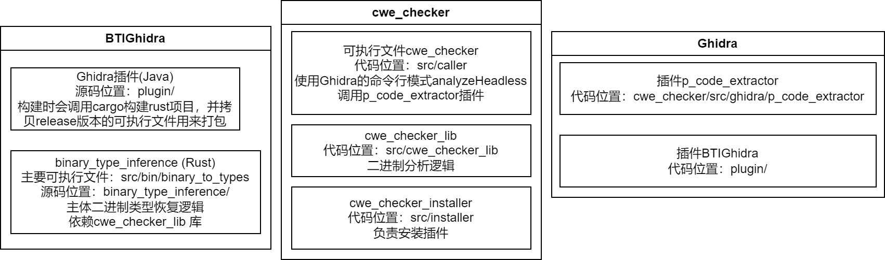

BTIGhidra和BinSub代码解析
运行与调试环境搭建
想要舒服地阅读代码肯定需要良好的调试环境。本次使用的代码是这个commit
- 安装Ghidra 10.3.3并设置环境变量
GHIDRA_INSTALL_DIR.- 修改ghidraRun脚本里面bg改为fg，在控制台前台运行，从而能够看到更多的输出。
- 安装Java 17 openjdk
- 安装Rust环境
- 安装just工具：cargo install just
- 执行just build。构建插件
- 找到
/BTIGhidra/plugin/dist/ghidiaplugin.zip，启动Ghidra，选择安装插件，选择这个zip包。
调试rust部分
在BinaryTypeInferenceRunner尝试增加代码打印执行binary_to_types的命令。然后创建一个项目，尝试运行一下插件。初始分析的时候记得额外勾选decompiler
param ID。然后在Analysis->one Shot->Type
inference这里执行插件。
然后vscode安装好rust开发环境，codeLLDB插件。需要用vscode直接打开内部的rust项目文件夹，language server的提升和跳转才会正常。然后基于上面打印的执行命令，先执行测试一下，然后增加Launch的debug选项。只需要把运行的程序路径改为构建后debug版本的可执行文件路径。参数就是打印出来的参数。比如我的是：
1 | { |
代码架构
整体架构如图所示

BTIGhidra的Java插件
当点击Ghidra菜单的type inference按钮的时候，首先BTIGhidra的Ghidra插件部分会导出各种信息，准备传递给Rust部分的主体分析代码。
从脚本的main函数可以看出这里主要分为三步：
- produceArtifacts：提取约束，导出相关的文件，准备执行Rust那边可执行文件
binary_to_types。可以参考rust那边的命令行参数。- GetBinaryJson：调用CWEChecker的PcodeExtractor插件里的脚本，导出一个pcode的json表示。
- createTypeLattice：生成类型的格（偏序集）表示
- 生成额外的约束文件
- getCtypes：调用BinaryTypeInferenceRunner，运行rust那边的类型分析逻辑，生成最终类型导出的文件。
- applyCtype：在Ghidra中设置并创建导出的类型。目前似乎只设置了函数参数和返回值类型，以及全局变量类型。
Rust代码部分
从可执行文件binary_to_types的main函数开始。所有的输入首先被封装为JobDefinition，然后进一步生成InferenceJob类，并调用infer_ctypes函数生成结果。最后将结果导出为文件。
这里如果对基础理论不懂，想要深入研究的可以看我上一篇博客对retypd论文的解读，找里面相关的部分。
infer_ctypes的主要函数调用：
infer_labeled_graphget_simplified_constraints生成每个函数的summary，即如果有其他函数调用它，它的返回值类型和参数类型会有什么关系。即summary表示了这个函数调用对类型的影响，避免反复重复递归进去分析。- 首先从CWE_Checker那边拿到函数的调用图。因为summary之间也有依赖关系，提取调用者的summary的时候要应用依赖于被调函数的summary。因此我们采用拓扑排序的思想，按照调用图的拓扑排序顺序去依次分析得到summary。（如果调用边形成了环形依赖，即强联通分量，则把所有环上的函数看作一个大的函数进行分析。）这里和retypd论文中一致。
- 然后创建
scc_constraint_generation::Context并调用那边的生成约束逻辑。进一步调用那边的get_simplified_constraints函数。多次转调调用Context::simplify_sccinstantiate_callee_signatures应用调用的其他函数的summary。infer_pointers: 处理区分指针和数字类型的问题。通过一些加法减法运算，判断它们是数字加减还是指针加减。进一步推理那些变量是指针。simplify_graph:- 首先执行Saturate算法，算是核心的类型推断了，和retypd论文应该一致。简单来说，如果结构体指针A是结构体指针B子类型，则A在不同偏移位置的成员，也应当是B对应成员的子类型。此时saturation算法就会增加一条额外的子类型边给这两个成员节点。
intersect_with_pop_push: 这里涉及自动机理论，具体对应retypd论文里D.4 Shadowing的第二段（里面轻描淡写的一句）。把图看作自动机，创建一个新的图（自动机）保留原图的路径，仅去掉不允许先走pop边然后走push边的路径。把类型看作自动机之后，这里本质上是应用了自动机理论里语言相交的算法，节点数量为两边自动机状态数相乘。但是因为那边不允许pop+push的语言只需要两个自动机即可描述，节点只增加了一倍。generate_recursive_type_variables：这里和后续的walk_constraints函数相关。这里涉及自动机转正则表达式的算法。因为retypd原文中用文本形式表示约束，同时允许一种递归的约束形式，因此本质上就是正则表达式。retypd原文在Algorithm D.1推荐的是Tarjan’s path expression algorithm。《A Unified Approach to Path Problems》这篇。walk_constraints见上面的描述。首先需要标记参数和返回值节点，作为interesting的节点，然后生成interesting节点之间的所有路径组合成的正则表达式。因为路径只允许先push一些边，然后再pop一些边，对应的就是约束两边的label，所以最后的表达式就是一系列constraint。这个最后也就是summary。
lower_labeled_sketch_graph：get_labeled_sketch_graph：将节点转换为具体的类型。build_type递归访问节点，转换为C类型。涉及类型的图表示和语法树表示之间的对应关系。
类型的图表示
常规的类型往往都是语法树的形式。但是有时候会出现递归的数据结构。在代码里都是先声明，然后成员可以引用没有定义完的结构体类型。而在语法树上，可以发现树的子节点反向应用了之前的节点，这似乎使得树（有向无环图）形成了环，泛化为了一般的图。因此，我们直接使用图表示类型。对应retypd论文中的Sketch。
1 | struct A; |